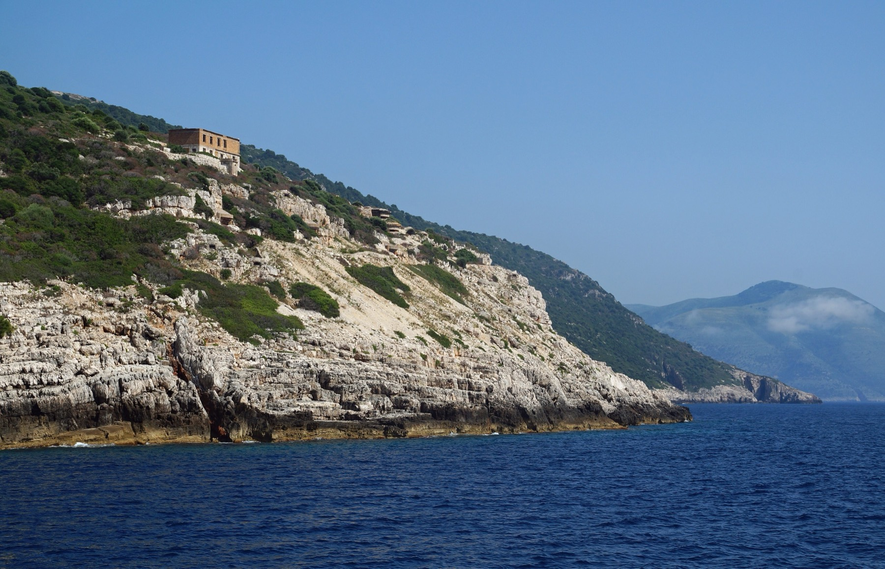
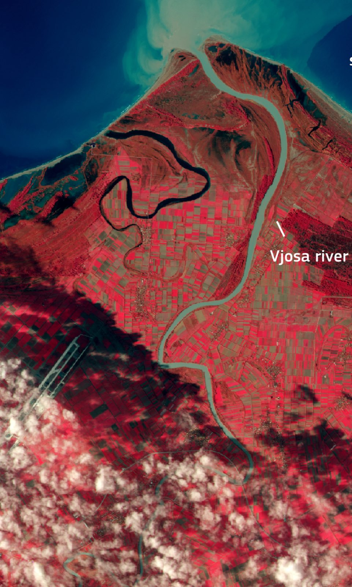

The Environmental Cost
What is at stake on a protected coastline, and what evidence exists?
The Bay of Vlorë holds Albania's first marine national park and one of its most important lagoon systems. The question is not whether development can happen, but whether the rules that protect these places were followed, and who can check.
- Sazan lies within the area of the Karaburun-Sazan National Marine Park, created in 2010.
- Zvërnec sits in the Vjosa-Narta Protected Landscape, whose rules were changed by Law 21/2024.
- Satellite analysis found works at Zvërnec without a published environmental assessment or permit.
- A map with environmental and development layers.
Three protected places
Karaburun-Sazan National Marine Park
Proclaimed by the Council of Ministers on 28 April 2010 as Albania's first marine national park, covering waters near Karaburun and Sazan. Its waters host the Mediterranean monk seal and 36 globally threatened marine species.
Vjosa-Narta Protected Landscape
Lagoon, river delta and coastal wetland home to flamingos, monk seals and sea-turtle nesting sites. Its protections were altered by the February 2024 amendment, Law 21/2024.
Vjosa Wild River National Park
Created in 2023 as the first wild-river national park of its kind. Gravel extraction and hydropower upstream add further pressure on the delta.

From military island to marine park
Sazan was a closed military island for decades; bunkers and barracks still line its cliffs. Since 2010 the waters around it have been part of Albania's first marine national park.
A resort would be the island's first large civilian use. Whether the park's rules apply to construction on the island itself is not established in the sources reviewed. Research question
Protection and development, on one map
Development and environmental layers are switched on. Click a place for its status and sources. No boundaries are drawn because no published boundary data was reviewed.
The satellite record

This Copernicus Sentinel-2 image was taken on 11 December 2024, before the Zvërnec works began. In false colour, vegetation shows red; the Vjosa river and the straight runway of the new Vlorë airport are visible.
An image like this is a baseline: a "before" that later images can be compared against. Free Sentinel-2 imagery is collected every few days.
What should have come first
Three safeguards that the NGO findings say were missing at Zvërnec. Each is a document that either exists or doesn't, which makes it checkable.
An environmental impact assessment
None published before the works.
Public consultation
None held before the works. Albanian NGOs later boycotted ministry consultations until Law 21/2024 is repealed.
A valid permit
None published. The government describes the land as private property.
Suspension, and Europe's response
Works suspended
After national and international protests, construction stopped and the perimeter fence was removed.
European Commission
Warned that the works could jeopardise closing the environment chapter (Chapter 27) of accession talks.
European Parliament
Expects Albania to repeal the 2024 amendment by the end of 2026 as a prerequisite for accession progress.
Vlorë International Airport
Built inside the Vjosa-Narta Protected Landscape and criticised on environmental and governance grounds. In August 2026 the state began terminating its concession over delays.